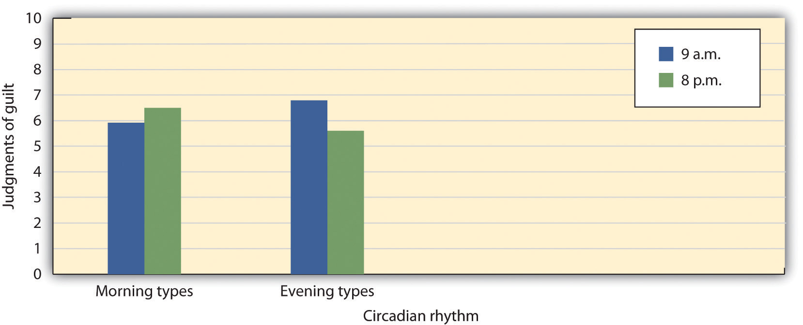
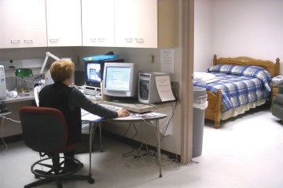
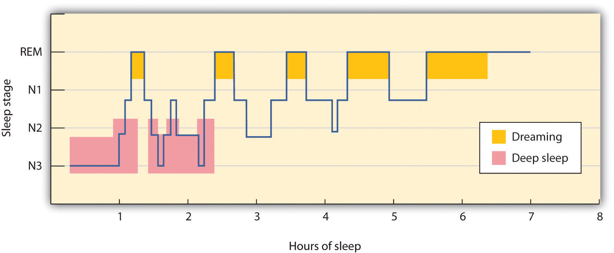
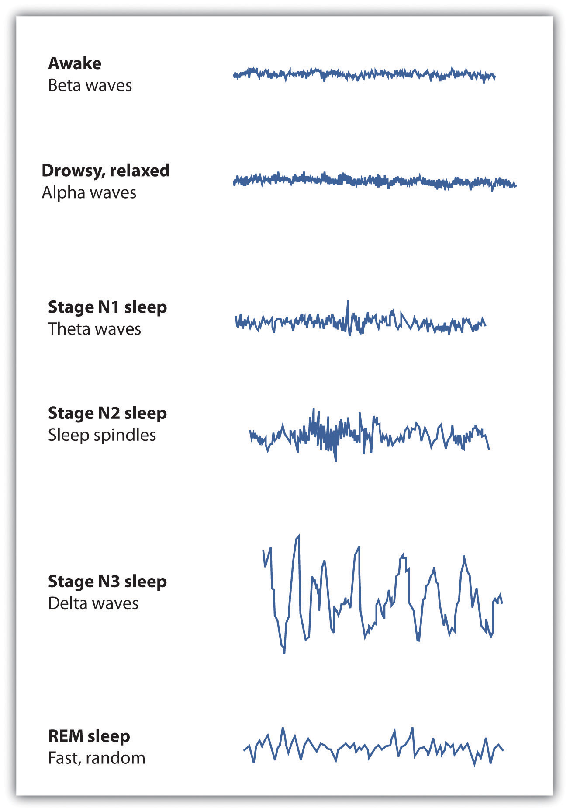
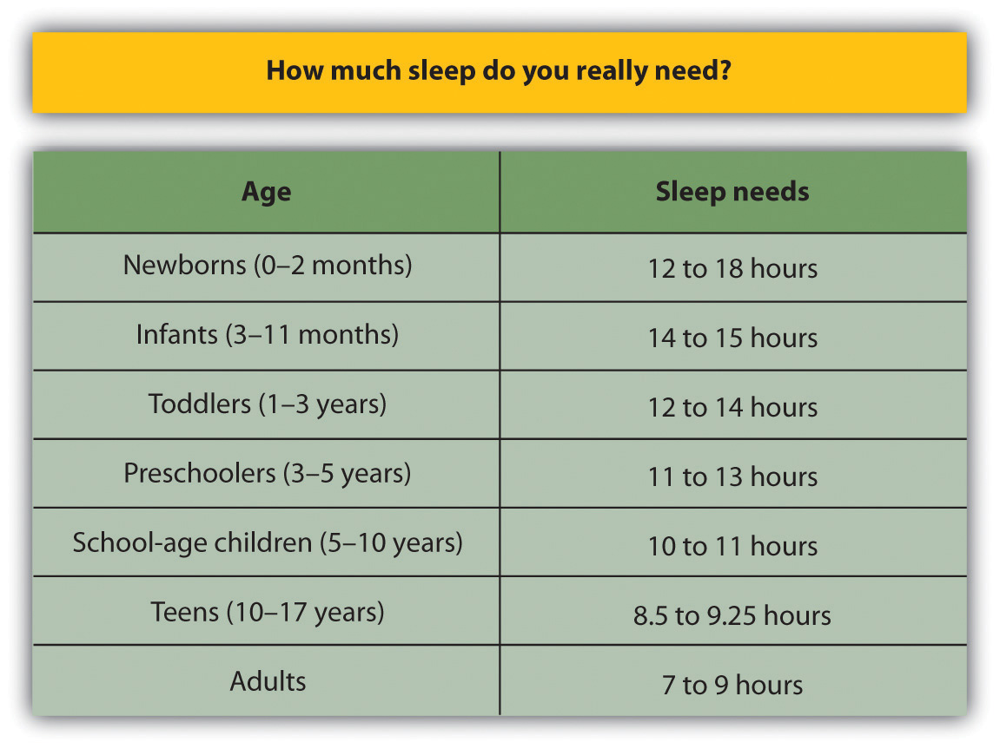
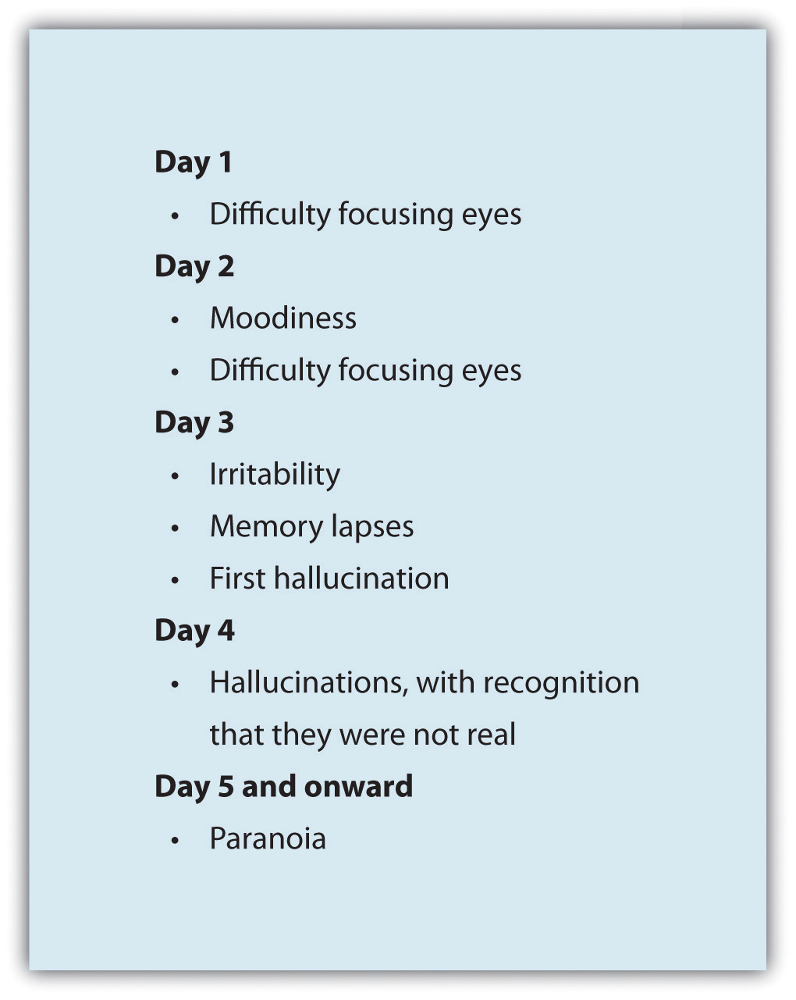

The lives of all organisms, including humans, are influenced by regularly occurring cycles of behaviors known as biological rhythmsRegularly occurring cycles of behaviors caused by biological factors.. One important biological rhythm is the annual cycle that guides the migration of birds and the hibernation of bears. Women also experience a 28-day cycle that guides their fertility and menstruation. But perhaps the strongest and most important biorhythm is the daily circadian rhythmThe biological cycle that guides the daily waking and sleeping in many animals. (from the Latin circa, meaning “about” or “approximately,” and dian, meaning “daily”) that guides the daily waking and sleeping cycle in many animals.
Many biological rhythms are coordinated by changes in the level and duration of ambient light, for instance, as winter turns into summer and as night turns into day. In some animals, such as birds, the pineal gland in the brain is directly sensitive to light and its activation influences behavior, such as mating and annual migrations. Light also has a profound effect on humans. We are more likely to experience depression during the dark winter months than during the lighter summer months, an experience known as seasonal affective disorder (SAD), and exposure to bright lights can help reduce this depression (McGinnis, 2007).McGinniss, P. (2007). Seasonal affective disorder (SAD)—Treatment and drugs. Mayo Clinic. Retrieved from http://www.mayoclinic.com/health/seasonal-affective-disorder/DS00195/DSECTION=treatments%2Dand%2Ddrugs
Sleep is also influenced by ambient light. The ganglion cells in the retina send signals to a brain area above the thalamus called the suprachiasmatic nucleus, which is the body’s primary circadian “pacemaker.” The suprachiasmatic nucleus analyzes the strength and duration of the light stimulus and sends signals to the pineal gland when the ambient light level is low or its duration is short. In response, the pineal gland secretes melatonin, a powerful hormone that facilitates the onset of sleep.
The circadian rhythm influences our energy levels such that we have more energy at some times of day than others. Galen Bodenhausen (1990)Bodenhausen, G. V. (1990). Stereotypes as judgmental heuristics: Evidence of circadian variations in discrimination. Psychological Science, 1, 319–322. argued that people may be more likely to rely on their stereotypes (i.e., their beliefs about the characteristics of social groups) as a shortcut to making social judgments when they are tired than when they have more energy. To test this hypothesis, he asked 189 research participants to consider cases of alleged misbehavior by other college students and to judge the probability of the accused students’ guilt. The accused students were identified as members of particular social groups, and they were accused of committing offenses that were consistent with stereotypes of these groups.
One case involved a student athlete accused of cheating on an exam, one case involved a Hispanic student who allegedly physically attacked his roommate, and a third case involved an African American student who had been accused of selling illegal drugs. Each of these offenses had been judged via pretesting in the same student population to be stereotypically (although, of course, unfairly) associated with each social group. The research participants were also provided with some specific evidence about the case that made it ambiguous whether the person had actually committed the crime, and then asked to indicate the likelihood of the student’s guilt on an 11-point scale (0 = extremely unlikely to 10 = extremely likely).
Participants also completed a measure designed to assess their circadian rhythms—whether they were more active and alert in the morning (Morning types) or in the evening (Evening types). The participants were then tested at experimental sessions held either in the morning (9 a.m.) or in the evening (8 p.m.). As you can see in Figure 5.2 "Circadian Rhythms and Stereotyping", the participants were more likely to rely on their negative stereotypes of the person they were judging at the time of day in which they reported being less active and alert. Morning people used their stereotypes more when they were tested in the evening, and evening people used their stereotypes more when they were tested in the morning.
Figure 5.2 Circadian Rhythms and Stereotyping
Students who indicated that they had more energy in the morning relied on their stereotypes more at night, and students who indicated that they had more energy in the night relied on their stereotypes more in the morning.
Source: Adapted from Bodenhausen, G. V. (1990). Stereotypes as judgmental heuristics: Evidence of circadian variations in discrimination. Psychological Science, 1, 319–322.
Although we lose consciousness as we sleep, the brain nevertheless remains active. The patterns of sleep have been tracked in thousands of research participants who have spent nights sleeping in research labs while their brain waves were recorded by monitors, such as an electroencephalogram, or EEG (Figure 5.3 "Sleep Labs").
Figure 5.3 Sleep Labs
Sleep researchers measure the activity of the brain, eyes, face, and other parts of the body while the participant sleeps.
Source: Photo courtesy of Stephens County Hospital, http://www.stephenscountyhospital.com/services/sleep_lab.htm.
Sleep researchers have found that sleeping people undergo a fairly consistent pattern of sleep stages, each lasting about 90 minutes. As you can see in Figure 5.4 "Stages of Sleep", these stages are of two major types: Rapid eye movement (REM) sleepA sleep stage characterized by the presence of fast eye movements and dreaming. is a sleep stage characterized by the presence of quick fast eye movements and dreaming. REM sleep accounts for about 25% of our total sleep time. During REM sleep, our awareness of external events is dramatically reduced, and consciousness is dominated primarily by internally generated images and a lack of overt thinking (Hobson, 2004).Hobson, A. (2004). A model for madness? Dream consciousness: Our understanding of the neurobiology of sleep offers insight into abnormalities in the waking brain. Nature, 430, 69–95. During this sleep stage our muscles shut down, and this is probably a good thing as it protects us from hurting ourselves or trying to act out the scenes that are playing in our dreams. The second major sleep type, non-rapid eye movement (non-REM) sleepA deep sleep, characterized by very slow brain waves, which is further subdivided into three substages, labeled as stages N1, N2, and N3. is a deep sleep, characterized by very slow brain waves, that is further subdivided into three stages: N1, N2, and N3. Each of the sleep stages has its own distinct pattern of brain activity (Dement & Kleitman, 1957).Dement, W., & Kleitman, N. (1957). Cyclic variations in EEG during sleep. Electroencephalography & Clinical Neurophysiology, 9, 673–690.
Figure 5.4 Stages of Sleep
During a typical night, our sleep cycles move between REM and non-REM sleep, with each cycle repeating at about 90-minute intervals. The deeper non-REM sleep stages usually occur earlier in the night.
As you can see in Figure 5.5 "EEG Recordings of Brain Patterns During Sleep", the brain waves that are recorded by an EEG as we sleep show that the brain’s activity changes during each stage of sleeping. When we are awake, our brain activity is characterized by the presence of very fast beta waves. When we first begin to fall asleep, the waves get longer (alpha waves), and as we move into stage N1 sleep, which is characterized by the experience of drowsiness, the brain begins to produce even slower theta waves. During stage N1 sleep, some muscle tone is lost, as well as most awareness of the environment. Some people may experience sudden jerks or twitches and even vivid hallucinations during this initial stage of sleep.
Figure 5.5 EEG Recordings of Brain Patterns During Sleep
Each stage of sleep has its own distinct pattern of brain activity.
Normally, if we are allowed to keep sleeping, we will move from stage N1 to stage N2 sleep. During stage N2, muscular activity is further decreased and conscious awareness of the environment is lost. This stage typically represents about half of the total sleep time in normal adults. Stage N2 sleep is characterized by theta waves interspersed with bursts of rapid brain activity known as sleep spindles.
Stage N3, also known as slow wave sleep, is the deepest level of sleep, characterized by an increased proportion of very slow delta waves. This is the stage in which most sleep abnormalities, such as sleepwalking, sleeptalking, nightmares, and bed-wetting occur. The sleepwalking murders committed by Mr. Parks would have occurred in this stage. Some skeletal muscle tone remains, making it possible for affected individuals to rise from their beds and engage in sometimes very complex behaviors, but consciousness is distant. Even in the deepest sleep, however, we are still aware of the external world. If smoke enters the room or if we hear the cry of a baby we are likely to react, even though we are sound asleep. These occurrences again demonstrate the extent to which we process information outside consciousness.
After falling initially into a very deep sleep, the brain begins to become more active again, and we normally move into the first period of REM sleep about 90 minutes after falling asleep. REM sleep is accompanied by an increase in heart rate, facial twitches, and the repeated rapid eye movements that give this stage its name. People who are awakened during REM sleep almost always report that they were dreaming, while those awakened in other stages of sleep report dreams much less often. REM sleep is also emotional sleep. Activity in the limbic system, including the amygdala, is increased during REM sleep, and the genitals become aroused, even if the content of the dreams we are having is not sexual. A typical 25-year-old man may have an erection nearly half of the night, and the common “morning erection” is left over from the last REM period before waking.
Normally we will go through several cycles of REM and non-REM sleep each night (Figure 5.5 "EEG Recordings of Brain Patterns During Sleep"). The length of the REM portion of the cycle tends to increase through the night, from about 5 to 10 minutes early in the night to 15 to 20 minutes shortly before awakening in the morning. Dreams also tend to become more elaborate and vivid as the night goes on. Eventually, as the sleep cycle finishes, the brain resumes its faster alpha and beta waves and we awake, normally refreshed.
According to a recent poll (National Sleep Foundation, 2009),National Sleep Foundation. (2009). Sleep in America Poll. Washington, DC: Author. Retrieved from http://www.sleepfoundation.org/sites/default/files/2009%20Sleep%20in%20America%20SOF%20EMBARGOED.pdf about one-fourth of American adults say they get a good night’s sleep only a few nights a month or less. These people are suffering from a sleep disorder known as insomniaA sleep disorder that involves persistent difficulty falling or staying asleep., defined as persistent difficulty falling or staying asleep. Most cases of insomnia are temporary, lasting from a few days to several weeks, but in some cases insomnia can last for years.
Insomnia can result from physical disorders such as pain due to injury or illness, or from psychological problems such as stress, financial worries, or relationship difficulties. Changes in sleep patterns, such as jet lag, changes in work shift, or even the movement to or from daylight savings time can produce insomnia. Sometimes the sleep that the insomniac does get is disturbed and nonrestorative, and the lack of quality sleep produces impairment of functioning during the day. Ironically, the problem may be compounded by people’s anxiety over insomnia itself: Their fear of being unable to sleep may wind up keeping them awake. Some people may also develop a conditioned anxiety to the bedroom or the bed.
People who have difficulty sleeping may turn to drugs to help them sleep. Barbiturates, benzodiazepines, and other sedatives are frequently marketed and prescribed as sleep aids, but they may interrupt the natural stages of the sleep cycle, and in the end are likely to do more harm than good. In some cases they may also promote dependence. Most practitioners of sleep medicine today recommend making environmental and scheduling changes first, followed by therapy for underlying problems, with pharmacological remedies used only as a last resort.
According to the National Sleep Foundation, some steps that can be used to combat insomnia include the following:
Another common sleep problem is sleep apneaA sleep disorder characterized by pauses in breathing that last at least 10 seconds during sleep., a sleep disorder characterized by pauses in breathing that last at least 10 seconds during sleep (Morgenthaler, Kagramanov, Hanak, & Decker, 2006).Morgenthaler, T. I., Kagramanov, V., Hanak, V., & Decker, P. A. (2006). Complex sleep apnea syndrome: Is it a unique clinical syndrome? Sleep, 29(9), 1203–1209. Retrieved from http://www.journalsleep.org/ViewAbstract.aspx?pid=26630 In addition to preventing restorative sleep, sleep apnea can also cause high blood pressure and may raise the risk of stroke and heart attack (Yaggi et al., 2005).Yaggi, H. K., Concato, J., Kernan, W. N., Lichtman, J. H., Brass, L. M., & Mohsenin, V. (2005). Obstructive sleep apnea as a risk factor for stroke and death. The New England Journal of Medicine, 353(19), 2034–2041. doi:10.1056/NEJMoa043104
Most sleep apnea is caused by an obstruction of the walls of the throat that occurs when we fall asleep. It is most common in obese or older individuals who have lost muscle tone and is particularly common in men. Sleep apnea caused by obstructions is usually treated with an air machine that uses a mask to create a continuous pressure that prevents the airway from collapsing, or with mouthpieces that keep the airway open. If all other treatments have failed, sleep apnea may be treated with surgery to open the airway.
NarcolepsyA disorder characterized by extreme daytime sleepiness with frequent episodes of “nodding off.” is a disorder characterized by extreme daytime sleepiness with frequent episodes of “nodding off.” The syndrome may also be accompanied by attacks of cataplexy, in which the individual loses muscle tone, resulting in a partial or complete collapse. It is estimated that at least 200,000 Americans suffer from narcolepsy, although only about a quarter of these people have been diagnosed (National Heart, Lung, and Blood Institute, 2008).National Heart, Lung, and Blood Institute. (2008). Who is at risk for narcolepsy? Retrieved from http://www.nhlbi.nih.gov/health/dci/Diseases/nar/nar_who.html
Narcolepsy is in part the result of genetics—people who suffer from the disease lack neurotransmitters that are important in keeping us alert (Taheri, Zeitzer, & Mignot, 2002)Taheri, S., Zeitzer, J. M., & Mignot, E. (2002). The role of hypocretins (Orexins) in sleep regulation and narcolepsy. Annual Review of Neuroscience, 25, 283–313.—and is also the result of a lack of deep sleep. While most people descend through the sequence of sleep stages, then move back up to REM sleep soon after falling asleep, narcolepsy sufferers move directly into REM and undergo numerous awakenings during the night, often preventing them from getting good sleep.
Narcolepsy can be treated with stimulants, such as amphetamines, to counteract the daytime sleepiness, or with antidepressants to treat a presumed underlying depression. However, since these drugs further disrupt already-abnormal sleep cycles, these approaches may, in the long run, make the problem worse. Many sufferers find relief by taking a number of planned short naps during the day, and some individuals may find it easier to work in jobs that allow them to sleep during the day and work at night.
Other sleep disorders occur when cognitive or motor processes that should be turned off or reduced in magnitude during sleep operate at higher than normal levels (Mahowald & Schenck, 2000).Mahowald, M., & Schenck, C. (2000). REM sleep parasomnias. Principles and Practice of Sleep Medicine, 724–741. One example is somnamulism (sleepwalking), in which the person leaves the bed and moves around while still asleep. Sleepwalking is more common in childhood, with the most frequent occurrences around the age of 12 years. About 4% of adults experience somnambulism (Mahowald & Schenck, 2000).Mahowald, M., & Schenck, C. (2000). REM sleep parasomnias. Principles and Practice of Sleep Medicine, 724–741.
Sleep terrors is a disruptive sleep disorder, most frequently experienced in childhood, that may involve loud screams and intense panic. The sufferer cannot wake from sleep even though he or she is trying to. In extreme cases, sleep terrors may result in bodily harm or property damage as the sufferer moves about abruptly. Up to 3% of adults suffer from sleep terrors, which typically occur in sleep stage N3 (Mahowald & Schenck, 2000).Mahowald, M., & Schenck, C. (2000). REM sleep parasomnias. Principles and Practice of Sleep Medicine, 724–741.
Other sleep disorders include bruxism, in which the sufferer grinds his teeth during sleep; restless legs syndrome, in which the sufferer reports an itching, burning, or otherwise uncomfortable feeling in his legs, usually exacerbated when resting or asleep; and periodic limb movement disorder, which involves sudden involuntary movement of limbs. The latter can cause sleep disruption and injury for both the sufferer and bed partner.
Although many sleep disorders occur during non-REM sleep, REM sleep behavior disorder (Mahowald & Schenck, 2005)Mahowald, M., & Schenck, C. (2005). REM sleep behavior disorder. Handbook of Clinical Neurophysiology, 6, 245–253. is a condition in which people (usually middle-aged or older men) engage in vigorous and bizarre physical activities during REM sleep in response to intense, violent dreams. As their actions may injure themselves or their sleeping partners, this disorder, thought to be neurological in nature, is normally treated with hypnosis and medications.
Our preferred sleep times and our sleep requirements vary throughout our life cycle. Newborns tend to sleep between 16 and 18 hours per day, preschoolers tend to sleep between 10 and 12 hours per day, school-aged children and teenagers usually prefer at least 9 hours of sleep per night, and most adults say that they require 7 to 8 hours per night (Mercer, Merritt, & Cowell, 1998; National Sleep Foundation, 2008).Mercer, P., Merritt, S., & Cowell, J. (1998). Differences in reported sleep need among adolescents. Journal of Adolescent Health, 23(5), 259–263; National Sleep Foundation. (2008). Sleep in America Poll. Washington, DC: Author. Retrieved from http://www.sleepfoundation.org/sites/default/files/2008%20POLL%20SOF.PDF There are also individual differences in need for sleep. Some people do quite well with fewer than 6 hours of sleep per night, whereas others need 9 hours or more. The most recent study by the National Sleep Foundation suggests that adults should get between 7 and 9 hours of sleep per night (Figure 5.8 "Average Hours of Required Sleep per Night"), and yet Americans now average fewer than 7 hours.
Figure 5.8 Average Hours of Required Sleep per Night
The average U.S. adult reported getting only 6.7 hours of sleep per night, which is less than the recommended range propose by the National Sleep Foundation.
Source: Adapted from National Sleep Foundation. (2008). Sleep in America Poll. Washington, DC: Author. Retrieved from http://www.sleepfoundation.org/sites/default/files/2008%20POLL%20SOF.PDF.
Getting needed rest is difficult in part because school and work schedules still follow the early-to-rise timetable that was set years ago. We tend to stay up late to enjoy activities in the evening but then are forced to get up early to go to work or school. The situation is particularly bad for college students, who are likely to combine a heavy academic schedule with an active social life and who may, in some cases, also work. Getting enough sleep is a luxury that many of us seem to be unable or unwilling to afford, and yet sleeping is one of the most important things we can do for ourselves. Continued over time, a nightly deficit of even only 1 or 2 hours can have a substantial impact on mood and performance.
Sleep has a vital restorative function, and a prolonged lack of sleep results in increased anxiety, diminished performance, and, if severe and extended, may even result in death. Many road accidents involve sleep deprivation, and people who are sleep deprived show decrements in driving performance similar to those who have ingested alcohol (Hack, Choi, Vijayapalan, Davies, & Stradling, 2001; Williamson & Feyer, 2000).Hack, M. A., Choi, S. J., Vijayapalan, P., Davies, R. J. O., & Stradling, J. R. S. (2001). Comparison of the effects of sleep deprivation, alcohol and obstructive sleep apnoea (OSA) on simulated steering performance. Respiratory medicine, 95(7), 594–601; Williamson, A., & Feyer, A. (2000). Moderate sleep deprivation produces impairments in cognitive and motor performance equivalent to legally prescribed levels of alcohol intoxication. Occupational and Environmental Medicine, 57(10), 649. Poor treatment by doctors (Smith-Coggins, Rosekind, Hurd, & Buccino, 1994)Smith-Coggins, R., Rosekind, M. R., Hurd, S., & Buccino, K. R. (1994). Relationship of day versus night sleep to physician performance and mood. Annals of Emergency Medicine, 24(5), 928–934. and a variety of industrial accidents have also been traced in part to the effects of sleep deprivation.
Good sleep is also important to our health and longevity. It is no surprise that we sleep more when we are sick, because sleep works to fight infection. Sleep deprivation suppresses immune responses that fight off infection, and can lead to obesity, hypertension, and memory impairment (Ferrie et al., 2007; Kushida, 2005).Ferrie, J. E., Shipley, M. J., Cappuccio, F. P., Brunner, E., Miller, M. A., Kumari, M., & Marmot, M. G. (2007). A prospective study of change in sleep duration: Associations with mortality in the Whitehall II cohort. Sleep, 30(12), 1659; Kushida, C. (2005). Sleep deprivation: basic science, physiology, and behavior. London, England: Informa Healthcare. Sleeping well can even save our lives. Dew et al. (2003)Dew, M. A., Hoch, C. C., Buysse, D. J., Monk, T. H., Begley, A. E., Houck, P. R.,…Reynolds, C. F., III. (2003). Healthy older adults’ sleep predicts all-cause mortality at 4 to 19 years of follow-up. Psychosomatic Medicine, 65(1), 63–73. found that older adults who had better sleep patterns also lived longer.
Figure 5.9 The Effects of Sleep Deprivation
In 1964, 17-year-old high school student Randy Gardner remained awake for 264 hours (11 days) in order to set a new Guinness World Record. At the request of his worried parents, he was monitored by a U.S. Navy psychiatrist, Lt. Cmdr. John J. Ross. This chart maps the progression of his behavioral changes over the 11 days.
Source: Adapted from Ross, J. J. (1965). Neurological findings after prolonged sleep deprivation. Archives of Neurology, 12, 399–403.
DreamsThe succession of images, thoughts, sounds, and emotions that passes through our minds while sleeping. are the succession of images, thoughts, sounds, and emotions that passes through our minds while sleeping. When people are awakened from REM sleep, they normally report that they have been dreaming, suggesting that people normally dream several times a night but that most dreams are forgotten on awakening (Dement, 1997).Dement, W. (1997) What all undergraduates should know about how their sleeping lives affect their waking lives. Sleepless at Stanford. Retrieved from http://www.Stanford.edu/~dement/sleepless.html The content of our dreams generally relates to our everyday experiences and concerns, and frequently our fears and failures (Cartwright, Agargun, Kirkby, & Friedman, 2006; Domhoff, Meyer-Gomes, & Schredl, 2005).Cartwright, R., Agargun, M., Kirkby, J., & Friedman, J. (2006). Relation of dreams to waking concerns. Psychiatry Research, 141(3), 261–270; Domhoff, G. W., Meyer-Gomes, K., & Schredl, M. (2005). Dreams as the expression of conceptions and concerns: A comparison of German and American college students. Imagination, Cognition and Personality, 25(3), 269–282.
Many cultures regard dreams as having great significance for the dreamer, either by revealing something important about the dreamer’s present circumstances or predicting his future. The Austrian psychologist Sigmund Freud (1913/1988) Freud, S., & Classics of Medicine Library. (1988). The interpretation of dreams (Special ed.). Birmingham, AL: The Classics of Medicine Library. (Original work published 1913) analyzed the dreams of his patients to help him understand their unconscious needs and desires, and psychotherapists still make use of this technique today. Freud believed that the primary function of dreams was wish fulfillment, or the idea that dreaming allows us to act out the desires that we must repress during the day. He differentiated between the manifest content of the dream (i.e., its literal actions) and its latent content (i.e., the hidden psychological meaning of the dream). Freud believed that the real meaning of dreams is often suppressed by the unconscious mind in order to protect the individual from thoughts and feelings that are hard to cope with. By uncovering the real meaning of dreams through psychoanalysis, Freud believed that people could better understand their problems and resolve the issues that create difficulties in their lives.
Although Freud and others have focused on the meaning of dreams, other theories about the causes of dreams are less concerned with their content. One possibility is that we dream primarily to help with consolidation, or the moving of information into long-term memory (Alvarenga et al., 2008; Zhang (2004).Alvarenga, T. A., Patti, C. L., Andersen, M. L., Silva, R. H., Calzavara, M. B., Lopez, G.B.,…Tufik, S. (2008). Paradoxical sleep deprivation impairs acquisition, consolidation and retrieval of a discriminative avoidance task in rats. Neurobiology of Learning and Memory, 90, 624–632; Zhang, J. (2004). Memory process and the function of sleep. Journal of Theoretics, 6(6), 1–7. Rauchs, Desgranges, Foret, and Eustache (2005)Rauchs, G., Desgranges, B., Foret, J., & Eustache, F. (2005). The relationships between memory systems and sleep stages. Journal of Sleep Research, 14, 123–140. found that rats that had been deprived of REM sleep after learning a new task were less able to perform the task again later than were rats that had been allowed to dream, and these differences were greater on tasks that involved learning unusual information or developing new behaviors. Payne and Nadel (2004) Payne, J., & Nadel, L. (2004). Sleep, dreams, and memory consolidation: The role of the stress hormone cortisol. Learning & Memory, 11(6), 671. argued that the content of dreams is the result of consolidation—we dream about the things that are being moved into long-term memory. Thus dreaming may be an important part of the learning that we do while sleeping (Hobson, Pace-Schott, and Stickgold, 2000).Hobson, J. A., Pace-Schott, E. F., & Stickgold, R. (2000). Dreaming and the brain: Toward a cognitive neuroscience of conscious states. Behavioral and Brain Sciences, 23(6), 793–842, 904–1018, 1083–1121.
The activation-synthesis theory of dreaming (Hobson & McCarley, 1977; Hobson, 2004)Hobson, J. A., & McCarley, R. (1977). The brain as a dream state generator: An activation-synthesis hypothesis of the dream process. American Journal of Psychiatry, 134, 1335–1348; Hobson, J. A. (2004). Dreams Freud never had: A new mind science. New York, NY: Pi Press. proposes still another explanation for dreaming—namely, that dreams are our brain’s interpretation of the random firing of neurons in the brain stem. According to this approach, the signals from the brain stem are sent to the cortex, just as they are when we are awake, but because the pathways from the cortex to skeletal muscles are disconnected during REM sleep, the cortex does not know how to interpret the signals. As a result, the cortex strings the messages together into the coherent stories we experience as dreams.
Although researchers are still trying to determine the exact causes of dreaming, one thing remains clear—we need to dream. If we are deprived of REM sleep, we quickly become less able to engage in the important tasks of everyday life, until we are finally able to dream again.